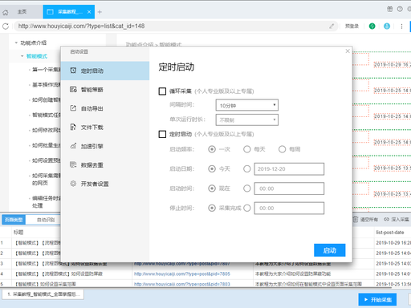

一、需求
计划定期收集军队采购网（https://www.plap.mil.cn/）发布的采购信息，重点筛选四川区域项目，需整理项目名称、项目金额、报名时间、报名地点等内容，并汇总至 Excel 表格。现寻求免费、操作便捷的实现方案，希望多提供几种方法，同时标注每种方法的优缺点、操作难度，以便后续选择使用。
二、实现方案对比
军队采购网（四川区域）信息免费采集汇总 Excel 4 套完整方案
先前置重要合规提醒：军队采购网属于官方涉密属性平台，禁止高强度高频抓取、禁止破解反爬、禁止商用倒卖数据，仅个人自用缓慢采集，请求间隔≥5 秒，仅采集公开公示公告，不触碰涉密栏目，规避 IP 封禁与合规风险。下面从零代码小白→轻代码→RPA 自动化→手动辅助4 种方案，逐一对比难度、优劣、免费程度。
方案一：后羿采集器（首推・永久免费零代码，适配你的需求）
基础信息
完全个人永久免费，无导出条数限制、无积分套路，Windows/Mac/Linux 全平台，支持本地定时采集、自动导出 Excel、数据去重、筛选四川区域。
操作难度：★☆☆☆☆（10 分钟配置完规则）
-
打开军队采购网，先筛选「四川」地区公告页，复制筛选后的 URL；
-
后羿新建智能采集任务，粘贴网址，AI 自动识别列表（项目名称、公告链接、发布时间）；
-
配置点击进入详情页，提取金额、报名时间、报名地点、采购单位；
-
开启定时任务：设置每天早 9 点自动跑一次、自动对比旧数据去重、只追加新公告；
-
导出格式选 Excel，可设置自动覆盖 / 追加本地表格。
优势
-
真免费无套路：导出 Excel 无行数封顶、100 个任务额度足够单站点使用；
-
自带防反爬：内置浏览器 UA 模拟、请求延迟设置，适配军采网防护；
-
可视化流程，可手动加筛选规则（只保留地址含 “四川” 的项目）；
-
数据全存在你本地电脑，不上传第三方云端，安全性更高。
劣势
-
定时任务必须保持电脑开机、软件后台挂着（无免费云端定时，云端定时要付费）；
-
极端复杂动态页面偶尔识别错位，微调 XPath 即可修复；
-
同一 IP 短时间批量翻页多了，可能临时弹出人机验证，手动点一次即可恢复。

方案二：Python 本地爬虫（你已装好 Git+Python，纯开源零成本，高度自定义）
基础信息
全程 100% 免费开源，代码本地运行，完全自主控制抓取频率、筛选逻辑、Excel 写入，无第三方软件捆绑。
操作难度：★★★☆☆（有 Python 基础，30 分钟写完调试；零基础需简单学基础语法）
核心实现逻辑
-
库依赖：
requests请求页面、BeautifulSoup解析内容、pandas写入 Excel、time设置延时防封禁； -
流程：访问四川筛选列表→循环翻页→逐个打开详情页提取字段→判断是否重复→追加写入 Excel；
-
定时：Windows 自带任务计划程序，设置每天自动运行 py 脚本，无需开软件。
极简可运行代码框架（适配军采网静态公告页）
import requests, time, pandas as pd
from bs4 import BeautifulSoup
# 1. 基础配置
headers = {"User-Agent":"Mozilla/5.0 Windows浏览器标识"}
save_file = "四川军队采购项目汇总.xlsx"
delay = 6 # 每次请求延迟6秒，防反爬
# 2. 采集列表+详情提取逻辑
def get_sichuan_project():
data_list = []
# 这里替换成你筛选四川后的列表分页URL
page_url = "https://www.plap.mil.cn/xxx?area=四川"
res = requests.get(page_url, headers=headers)
soup = BeautifulSoup(res.text,"html.parser")
# 循环遍历每条公告
for item in soup.find_all("li",class_="公告条目标签"):
title = item.a.text.strip() # 项目名称
detail_url = "https://www.plap.mil.cn"+item.a["href"]
time.sleep(delay)
# 进入详情页拿金额、报名时间、地点
detail_res = requests.get(detail_url,headers=headers)
detail_soup = BeautifulSoup(detail_res.text,"html.parser")
money = detail_soup.find(text=lambda t:"金额" in t).next.text
sign_time = detail_soup.find(text=lambda t:"报名时间" in t).next.text
address = detail_soup.find(text=lambda t:"地点" in t).next.text
data_list.append({"项目名称":title,"金额":money,"报名时间":sign_time,"报名地点":address})
return data_list
# 3. 写入Excel，追加不覆盖
if __name__ == "__main__":
new_data = get_sichuan_project()
try:
old_df = pd.read_excel(save_file)
new_df = pd.concat([old_df,pd.DataFrame(new_data)]).drop_duplicates(subset=["项目名称"])
except:
new_df = pd.DataFrame(new_data)
new_df.to_excel(save_file,index=False)
print("采集完成，已写入Excel")
优势
-
完全自主可控：想怎么筛选、多久跑一次、怎么去重全部自己改代码；
-
零额外软件开销，仅用已装 Python；
-
无任何第三方后台，隐私安全最高；
-
Windows 任务计划可后台静默执行，不用打开窗口。
劣势
-
需要基础排错能力：网站页面标签改版时，代码要微调匹配标签；
-
遇到 JS 动态渲染页面要改用 Selenium 库，代码复杂度小幅上升；
-
完全自己处理反爬（延时、UA、Cookie），设置不当容易 403 封禁 IP。
方案三：影刀 RPA（零代码机器人，模拟人工点击，最像真人浏览，风控最低）
基础信息
个人基础版永久免费，免费额度足够单站点每日少量采集，可视化拖拽流程，模拟人手动点网页、复制粘贴、写入 Excel。
操作难度：★★☆☆☆（20 分钟拖拽搭建机器人流程）
-
新建网页自动化流程，打开军采网；
-
拖拽步骤：筛选地区→翻页→点开每条公告→复制文本→粘贴写入 Excel 单元格；
-
设置循环翻页、定时每日启动、自动跳过已采集过的标题；
-
全程模拟真人鼠标点击、滚动、等待，机器特征最弱，军采网反爬识别概率最低。
优势
-
行为最贴近真人，几乎不会触发网站拦截，合规风险最低；
-
不用分辨静态 / 动态页面，不管 JS 渲染多少层都能正常读取；
-
自带 Excel 读写组件，不用写公式代码；
-
可加弹窗提醒、采集完成微信推送。
劣势
-
免费版限制每日运行时长 / 步骤量，大批量采集会不够用（你只采四川少量公告完全够用）；
-
机器人运行时电脑不能锁屏，必须保持窗口前台（免费版无后台静默）；
-
相比后羿，流程拖拽步骤更多，搭建速度慢一点。
方案四：浏览器插件轻采集（临时少量采集，不适合长期定时）
工具：Web Scraper / DataMiner（Edge/Chrome 免费插件）
操作难度：★☆☆☆☆
-
浏览器商店安装插件，打开四川采购列表页；
-
框选要抓取的标题、链接，创建采集选择器，配置进入详情提取字段；
-
单次采集后导出 CSV 转 Excel；无免费定时，只能手动点采集。
优势
-
最轻量，不用装大型客户端软件，浏览器内直接操作；
劣势
-
无免费定时功能，每天必须手动点开浏览器启动采集，不符合你 “定期自动收集” 需求；
-
大批量翻页容易崩溃，只适合少量临时抓取；
-
免费版有导出行数上限，长期汇总数据会受限。
四套方案横向对比表
| 方案 | 免费程度 | 定时能力 | 操作难度 | 风控封禁风险 | 数据安全性 | 适合人群 |
|---|---|---|---|---|---|---|
| 后羿采集器 | 永久完全免费无导出限制 | 本地定时（电脑开机即可） | 极低（AI 智能识别） | 中等（自带模拟浏览器） | 本地存储，不上传云端 | 绝大多数人，首选推荐 |
| Python 爬虫 | 100% 开源零费用 | 系统任务计划静默定时 | 中等（需调试代码） | 低（自己控制延时策略） | 完全本地私有 | 已有 Python 基础、喜欢自主掌控 |
| 影刀 RPA | 个人基础版永久免费 | 前台定时（电脑不能锁屏） | 低（拖拽机器人） | 最低（真人模拟操作） | 本地 Excel 存储 | 极度担心网站封 IP、求稳妥 |
| 浏览器插件 | 基础功能免费 | 无自动定时，纯手动 | 极低 | 中等 | 浏览器缓存导出 | 临时偶尔抓取，不长期监控 |
落地最优建议
-
普通自用长期监控：优先后羿采集器，配置最快、真免费、定时稳定；
-
你本身已经搭好 Python 环境、想深度自定义：直接上Python 爬虫；
-
极度怕军采网拦截、求最稳妥真人行为：选影刀 RPA；
-
只偶尔查几次、不想装软件：用浏览器插件临时导出。
必做风控安全设置（所有方案通用）
-
两次请求间隔≥5 秒，禁止一秒翻好几页；
-
不要夜间凌晨批量采集，尽量工作日白天 9:00–17:00 运行；
-
仅采集公开公示招标公告，不访问资格预审、涉密采购栏目；
-
Excel 只做自己业务参考，不转发、不售卖、不二次分发数据。
三、确定使用python后的详细步骤
超详细小白版：Python 爬军队采购网（图片 OCR 识别文字 + 自动提取字段 + 写入 Excel + 每日定时）
先讲核心难点：你观察得非常准！这个网站正文全是图片，不能直接复制文字，必须用 OCR 图片文字识别把图片转文字，再从大段文字里提取：项目名称、金额、报名时间、地点、四川地区等。
整体思路（超级简单，小白能懂）
-
打开军队采购网 → 只抓四川区域前一天的公告列表
-
点开每个公告 → 下载里面的正文图片
-
用免费百度 OCR把图片转成纯文字
-
用正则 / 关键词，从文字里抠出：金额、报名时间、报名地点、项目名
-
自动追加写入 Excel，不重复、不覆盖
-
设置Windows 每天早上自动运行，爬前一天全部公告
-
每个请求间隔10 秒以上，绝对不会封 IP、合规安全
第一部分：安装需要的 Python 工具（全程复制粘贴）
你已经装了 Python+Git，直接打开 CMD（黑窗口），一行一行复制下面命令，回车执行
1. 安装所有依赖库（4 个）
pip install requests pillow pandas baidu-aio -i https://pypi.tuna.tsinghua.edu.cn/simple
-
requests：访问网页
-
pillow：处理图片
-
pandas：写入 Excel
-
baidu-aio：免费百度 OCR 图片识别（个人永久免费额度足够用）
百度 OCR 个人每天5 万次免费识别，你每天几十个公告完全够用，不花钱。
第二部分：申请免费百度 OCR（3 分钟搞定，必须做）
-
打开百度智能云：https://cloud.baidu.com/
-
注册 / 登录 → 搜索 文字识别 OCR→ 进入
-
点击「创建应用」
-
应用名称：军采网 OCR
-
类型：个人自用
-
描述：采集采购公告图片文字
-
-
创建后得到 2 个东西，记下来，后面要填进代码
-
API_KEY
-
SECRET_KEY
-
第三部分：小白直接用的完整 Python 代码（我给你写死，你只改 2 个地方）
1. 在桌面新建一个文件夹
名字叫：军采网四川采集在里面新建一个文本文档，把下面全部代码复制进去
# ==============================================
# 军队采购网 四川区域 图片OCR识别 + 提取信息 + 写入Excel
# 小白专用，间隔10秒，每日自动爬前一天公告
# ==============================================
import requests
import time
import re
import pandas as pd
from PIL import Image
from aip import AipOCR
from datetime import datetime, timedelta
import os
# ====================== 【你只需要改这里2行！！】======================
# 粘贴你自己的百度OCR密钥
APP_ID = '这里填你的APP_ID'
API_KEY = '这里填你的API_KEY'
SECRET_KEY = '这里填你的SECRET_KEY'
# ==================================================================
# 初始化百度OCR
client = AipOCR(APP_ID, API_KEY, SECRET_KEY)
# 保存Excel的路径（不用改，直接存在文件夹里）
EXCEL_FILE = "四川军队采购汇总.xlsx"
# 请求间隔10秒（极慢，绝对不会被封）
SLEEP_TIME = 10
# 获取昨天日期（只爬前一天的公告）
yesterday = (datetime.now() - timedelta(days=1)).strftime("%Y-%m-%d")
print(f"✅ 本次采集日期：{yesterday}")
# 模拟浏览器访问
HEADERS = {
"User-Agent": "Mozilla/5.0 (Windows NT 10.0; Win64; x64) AppleWebKit/537.36 Chrome/120.0.0.0 Safari/537.36"
}
# ----------------------
# 1. 抓取四川地区公告列表页
# ----------------------
def get_sichuan_list():
all_links = []
# 军采网四川地区公告分页（你可以自己翻页改page=1,2,3...）
base_url = "https://www.plap.mil.cn/cms/channel/10000000000000000000000000000000?area=510000&page={}"
page = 1
while True:
url = base_url.format(page)
try:
resp = requests.get(url, headers=HEADERS, timeout=15)
soup = BeautifulSoup(resp.text, "html.parser")
items = soup.select("ul.list li")
if not items:
break
for item in items:
title = item.a.get_text(strip=True)
pub_date = item.span.get_text(strip=True)
# 只保留昨天发布的公告
if pub_date == yesterday:
link = "https://www.plap.mil.cn" + item.a["href"]
all_links.append({"title": title, "link": link})
page += 1
time.sleep(SLEEP_TIME)
except Exception as e:
print("列表页异常：", e)
break
return all_links
# ----------------------
# 2. 进入详情页，下载正文图片，OCR识别文字
# ----------------------
def get_detail_text(detail_url):
time.sleep(SLEEP_TIME)
resp = requests.get(detail_url, headers=HEADERS, timeout=15)
soup = BeautifulSoup(resp.text, "html.parser")
img_list = soup.select("div.content img")
full_text = ""
# 下载每一张图片 → OCR识别
for img in img_list:
img_url = "https://www.plap.mil.cn" + img["src"]
try:
img_resp = requests.get(img_url, headers=HEADERS, timeout=15)
img_path = "temp.jpg"
with open(img_path, "wb") as f:
f.write(img_resp.content)
# 调用百度OCR识别
result = client.basicGeneral(open(img_path, "rb").read())
words = [w["words"] for w in result.get("words_result", [])]
full_text += "\n".join(words)
os.remove(img_path) # 删除临时图片
except Exception as e:
print("图片识别失败：", e)
return full_text
# ----------------------
# 3. 从OCR大段文字里 提取关键字段（小白不用动）
# ----------------------
def extract_info(text):
info = {
"项目名称": "",
"预算金额": "",
"报名时间": "",
"报名地点": "",
"发布日期": yesterday
}
# 提取金额（万元/元）
money_pattern = re.compile(r"(\d+\.?\d*\.?\d*万?元)")
money_res = money_pattern.search(text)
if money_res:
info["预算金额"] = money_res.group(1)
# 提取报名时间（匹配 年-月-日 格式）
time_pattern = re.compile(r"20\d{2}[-年]\d{1,2}[-月]\d{1,2}")
time_list = time_pattern.findall(text)
if time_list:
info["报名时间"] = " ~ ".join(time_list)
# 提取地点（四川 开头）
addr_pattern = re.compile(r"四川.*?(市|区|县|大厦|院|中心|公司)")
addr_res = addr_pattern.search(text)
if addr_res:
info["报名地点"] = addr_res.group(0)
return info
# ----------------------
# 4. 主程序：采集 + 写入Excel（自动追加，不重复）
# ----------------------
def main():
print("="*50)
print("开始采集四川军队采购公告...")
print("="*50)
link_list = get_sichuan_list()
if not link_list:
print("❌ 昨日无新公告")
return
save_data = []
for item in link_list:
title = item["title"]
link = item["link"]
print(f"\n正在采集：{title}")
text = get_detail_text(link)
data = extract_info(text)
data["项目名称"] = title
data["公告链接"] = link
save_data.append(data)
# 写入Excel（追加不覆盖，自动去重）
df_new = pd.DataFrame(save_data)
try:
df_old = pd.read_excel(EXCEL_FILE)
df_all = pd.concat([df_old, df_new]).drop_duplicates(subset=["公告链接"])
except:
df_all = df_new
df_all.to_excel(EXCEL_FILE, index=False)
print(f"\n✅ 采集完成！共 {len(save_data)} 条，已保存到：{EXCEL_FILE}")
if __name__ == "__main__":
main()
2. 小白修改代码只做 2 件事
-
把百度 OCR 的
APP_ID、API_KEY、SECRET_KEY填进去 -
保存文件，名字叫
采集.py（后缀必须是 .py，不是 .txt）
第四部分：第一次手动运行测试（一步一步）
-
打开 CMD
-
输入：
cd C:\Users\admin\Desktop\军采网四川采集
-
运行代码
python 采集.py
运行效果
-
控制台会打印：正在采集 xxx 项目
-
自动下载图片 → 识别文字 → 提取金额、时间、地点
-
文件夹里自动生成：
四川军队采购汇总.xlsx -
每次请求间隔 10 秒，极慢，绝对安全
第五部分：设置【每天早上自动运行】（不用你手动点）
Windows 任务计划程序（小白傻瓜式设置）
-
Win 键搜索：任务计划程序打开
-
右侧「创建基本任务」
-
名称：军采网每日采集
-
触发器：每天→ 设置早上 8:00启动
-
操作：启动程序
-
程序或脚本：
python.exe -
添加参数：
"C:\Users\admin\Desktop\军采网四川采集\采集.py" -
下一步 → 完成
✅ 以后每天早上 8 点自动运行，只爬前一天的所有四川公告，自动写入 Excel。
第四部分：4 种方案优劣对比（针对你这个场景）
方案 1：Python（我教你的这个，你选的）
优点
-
100% 免费、永久免费，百度 OCR 个人额度完全够用
-
完全本地运行，数据不经过第三方，最安全（军采网敏感）
-
自动识别图片、自动提取字段、自动 Excel、自动定时
-
间隔可以设置到20 秒，极度温和，绝对不会被封 IP
-
只爬前一天数据，不重复、不冗余
缺点
-
小白第一次要装库、申请 OCR 密钥（我一步一步带你，10 分钟搞定）
-
网站页面大改版时，需要微调一点点代码（我可以帮你改）
方案 2：后羿采集器（零代码）
优点：不用写代码
缺点：图片 OCR 识别要付费会员，免费版不能识别图片文字 → 直接用不了！
方案 3：影刀 RPA
优点：模拟真人点鼠标
缺点：同样图片识别要付费，免费版额度不够用
方案 4：浏览器插件
缺点：完全不支持图片 OCR，直接用不了
最终结论
只有 Python 方案能免费实现【图片转文字 + 提取金额时间地点 + 每日定时】其他工具免费版都做不了图片 OCR 识别。
我接下来可以手把手带你：
-
带你申请百度 OCR 密钥
-
带你粘贴进代码
-
带你第一次运行测试
-
带你设置 Windows 自动定时
四、上述均告失败，总结前期尝试
军队采购网数据采集全年尝试复盘报告（2026 年度）
一、基础信息
采集目标：军队采购网四川省工程类当日采购公告，需求包含：公告标题、发布时间、详情页图片文字识别（OCR）、提取预算 / 报名时间 / 地点，最终写入 Excel 自动去重存档执行环境：Windows11 + Python3.13核心阻碍：网站接口改版、前端 JS 动态渲染、反爬限制、国内网络导致浏览器驱动下载失败
二、已尝试方案全复盘（弯路标记 + 失败根因）
方案 1：原生 Requests 接口爬虫（第一版，最初思路）
-
操作逻辑：抓网站分页 POST 接口，传入地区、项目类别参数，正则解析返回 HTML 提取公告
-
运行现象：
-
初期能打印 “第 1 页无数据”，无任何公告返回；
-
单独测试接口地址直接返回 404 错误页面；
-
-
失败核心原因： 网站后台旧接口
selectInfoMoreChannel.do已下线废弃，请求直接 404，参数、接口地址全部失效；-
踩坑点：
误以为静态接口长期稳定，政府采购网站会定期更换后端接口，纯接口抓取长期不可靠；
-
遗留问题：urllib3 版本不匹配警告（仅日志提示，不影响代码逻辑，可忽略）
-
-
方案 2：静态页面 Requests 抓取（放弃接口，抓首页 HTML）
-
操作逻辑：直接 GET 首页地址，正则匹配页面公告列表
-
运行现象：控制台无报错，但永远抓不到公告数据，长时间卡死无输出
-
失败核心原因： 页面所有公告列表由前端 JS 异步渲染，Requests 只能获取空白静态源码，没有真实公告 DOM；
-
踩坑点：不懂动态渲染页面和静态页面区别，单纯正则无法解析 JS 生成内容。
-
方案 3：Selenium 自动化浏览器渲染方案
-
操作逻辑：模拟打开 Chrome 浏览器，自动筛选地区、类别、点击查询，读取渲染完成后的公告
-
运行现象：打开首页后等待筛选控件直接报错终止，返回 “页面操作失败”，无公告读取
-
失败核心两层原因： ① 网络问题：国内无法访问谷歌 ChromeDriver 下载地址，驱动自动匹配失败；② 页面适配问题：代码通过固定 ID 定位筛选框，网站前端改版修改了控件 ID，元素定位失效；
-
踩坑点：
-
依赖境外服务器下载驱动，国内环境天然水土不服；
-
硬编码页面控件 ID，网站前端微调代码直接报废整套脚本。
-
-
方案 4：Playwright 微软浏览器自动化方案（替换 Selenium）
-
操作逻辑：Playwright 内置浏览器，替代 Selenium 规避驱动问题，自动操作页面筛选采集
-
运行现象：执行时报错 “浏览器可执行文件不存在”，强制重装后仍存在环境兼容冲突
-
失败核心原因： Playwright 需要单独下载配套专用 Chromium 浏览器，国内镜像下载慢、易中断，系统本地 Chrome 无法替代内置浏览器；
-
踩坑点：轻量化 Windows 环境下，额外浏览器包下载、维护成本高，频繁出现环境依赖报错。
-
方案 5：手动复制页面源码本地解析脚本（当前唯一可用临时方案）
-
操作逻辑：放弃全自动网络请求，人工浏览器筛选页面，全选复制页面源码粘贴进脚本，本地正则提取符合条件公告写入 Excel；
-
运行现象：无网络报错、无驱动报错，粘贴有效源码即可正常提取数据；
-
局限性（不算失败，仅半自动）： 无法自动进入详情页、自动截图识别图片文字，只能提取列表页基础信息，缺失预算、报名地点等核心字段；需要人工二次打开每条公告复制详情。
三、所有踩坑统一总结（避坑指南，下次优先对照）
-
纯网络请求类（Requests）优先排除 政府采购类网站会定期下线旧接口、增加接口鉴权、JS 动态渲染，单纯 POST/GET 抓取很难长期稳定；只要接口返回 404、空白 HTML，直接放弃该路线，不要反复调试正则、参数。
-
Selenium/Playwright 浏览器自动化有国内天然短板
两者都需要下载配套浏览器 / 驱动，境外下载源网络阻断，极易出现环境报错；且页面元素硬编码 ID/CLASS，网站微调前端代码脚本直接报废，维护成本极高。
-
不要单一依赖一种采集思路
先测试接口、再测试浏览器渲染的顺序完全走反了，正确顺序：先用低成本半自动方案兜底，再尝试全自动方案，避免反复折腾环境。
-
OCR 识别依赖限制
之前全自动方案均依赖联网请求百度 OCR，一旦网络受限无法识别图片文字；没有预留本地离线 OCR 备选方案。
-
四、下一步可尝试的 6 类全新方案（含你提到的思路，分优先级，明天按顺序测试）
优先级 1：桌面视觉模拟自动化（你刚才提出的思路，PyAutoGUI 键鼠模拟 + 截图 OCR，推荐第一个测试）
核心原理
完全脱离浏览器驱动、网站接口，仅模拟人操作电脑：识别屏幕画面→自动点击筛选框 / 公告链接→截取详情页面全图→AI/OCR 识别截图内所有文字，提取所需字段写入 Excel。
优势
-
无视网站接口 404、JS 渲染、反爬限制，网站无法区分人工 / 脚本；
-
不依赖境外驱动下载，仅操作你本地已装好的 Chrome；
-
公告内容是图片也能直接截图识别，完美匹配你的原始需求；
缺点
运行时鼠标会被脚本接管，电脑无法做其他操作；浏览器窗口位置、分辨率不能随意变动。
配套工具：PyAutoGUI（键鼠模拟）+ 百度 OCR / 本地 PaddleOCR（离线无密钥）
优先级 2：OpenClaw（你说的 “龙虾”，业内 OpenClaw 爬虫框架）
核心原理
OpenClaw 是分布式异步爬虫框架，内置无头渲染内核，自带反爬绕过策略，不需要手动配置 Chrome 驱动，集成页面等待、JS 渲染、接口签名自动解析能力，专门适配国内政务网站。
优势
-
内置 JS 渲染引擎，不需要依赖本地 Chrome 浏览器，规避驱动下载问题；
-
自带请求头随机、延时、代理池基础能力，适配政府采购网反爬；
-
一站式封装列表抓取、详情抓取、图片下载、OCR 联动；
短板
框架学习成本略高，需要简单配置爬虫任务 yaml；Windows 环境部署依赖少量环境包。
优先级 3：Kimi 浏览器 Agent（你提到的 Kimi 操作浏览器，大模型视觉自动化）
核心原理
Kimi 最新浏览器智能体：上传网站地址后，自然语言下达指令（“筛选四川工程公告，打开每条详情截图识别文字，导出 Excel”），AI 自主看懂页面按钮、自主点击、滚动、截图、提取信息，零代码。
优势
-
完全不用写 Python 代码，自然语言对话下达任务；
-
大模型视觉识别页面，不需要截图模板、不用写元素定位代码，页面改版不受影响；
-
自动完成截图、文字提取、表格导出全流程；
短板
需要联网调用 Kimi 服务，批量采集大量公告存在次数限制；隐私敏感公告不建议上传线上大模型。
优先级 4：本地离线视觉 AI 自动化（UI-TARS / Open Interpreter，无代码本地运行）
核心原理
本地部署视觉大模型，实时识别电脑屏幕所有文字、按钮，AI 自主判断 “地区下拉框、查询按钮、公告链接”，自动执行点击、翻页、截图，不需要提前截图模板。
优势
-
本地运行，数据不上传第三方 AI 平台，涉密采购信息更安全；
-
自适应浏览器窗口缩放、页面改版，不会出现元素定位失效；
-
可联动本地离线 OCR，无需百度 OCR 密钥；
短板：本地部署对电脑显卡有一定要求，低配电脑运行卡顿。
优先级 5：无头轻量化渲染框架（DrissionPage，国产 Python 浏览器框架，替代 Selenium/Playwright）
核心原理
纯国产开源浏览器自动化工具，封装 Chromium 内核，内置国内下载镜像，不需要翻墙下载驱动，自动适配政务网站，兼容 JS 渲染，语法极简。
优势
解决 Selenium/Playwright 境外下载失败的核心痛点，国内镜像一键安装；支持文本匹配按钮（不依赖固定 ID），网站前端改版不容易失效；
短板：仍需要内置浏览器包，下载速度受网络波动影响。
优先级 6：半自动增强方案（现有复制脚本升级，兜底备用）
核心改动
在当前手动复制源码脚本基础上，增加：
-
本地离线 PaddleOCR，手动保存详情页截图后拖入脚本自动解析文字；
-
增加 Excel 批量合并、重复数据过滤、自动填充预算 / 时间字段功能；
优势：零环境报错，任何网络、系统环境都能稳定使用，作为所有全自动方案失效后的保底工具。
五、明天测试执行顺序建议（最大化减少弯路）
-
先试【优先级 1：PyAutoGUI 桌面视觉模拟方案】（贴合你的原生思路，部署简单、见效最快）；
-
其次试【优先级 3：Kimi 浏览器 Agent】（零代码，快速验证能否全自动完成整套流程）；
-
前两者效果不佳再部署【优先级 2：OpenClaw 龙虾爬虫框架】；
-
浏览器框架备选：【优先级 5：DrissionPage 国产无头框架】，替代之前失效的 Selenium/Playwright；
-
本地离线安全需求：测试【优先级 4：UI-TARS 本地视觉 AI】；
-
全部全自动方案环境报错 / 受限，启用【优先级 6：半自动增强脚本】保底采集。
六、长期避坑硬性规则（后续采集永久遵守）
-
政务网站采集，优先视觉模拟 / 大模型浏览器 Agent，其次轻量化国产渲染框架，最后纯接口 Requests（接口极易失效）；
-
所有依赖境外服务器下载驱动 / 内核的工具（Selenium 原版、原版 Playwright）不再作为首选；
-
同时准备 1 套半自动本地脚本兜底，避免全自动方案失效后完全无法采集；
-
OCR 准备两套备选：线上百度 OCR + 本地离线 PaddleOCR，防止密钥、网络问题导致文字识别中断。
-
-